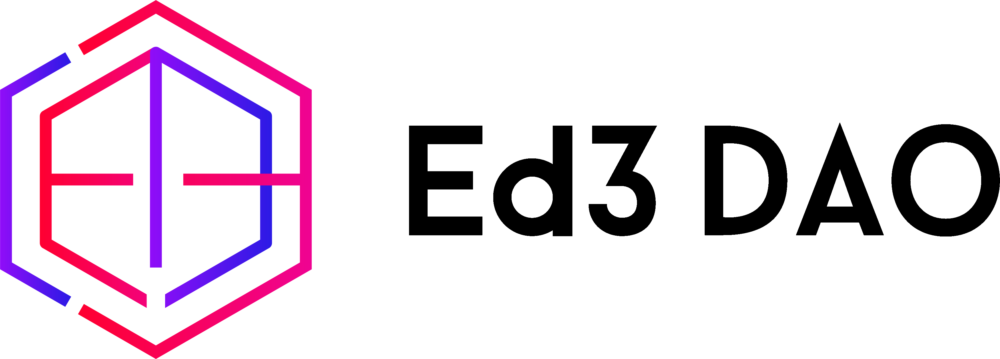
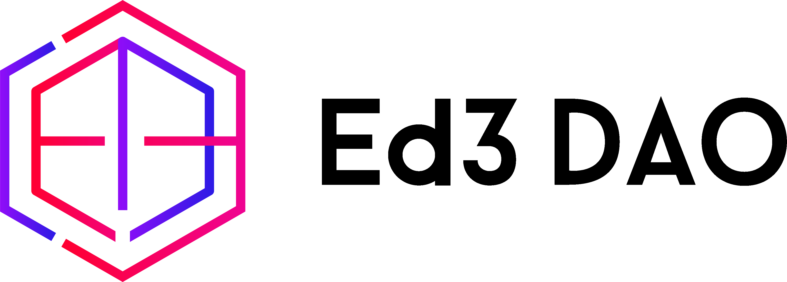
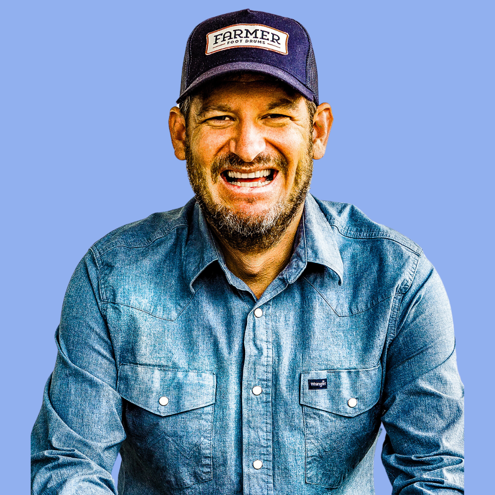
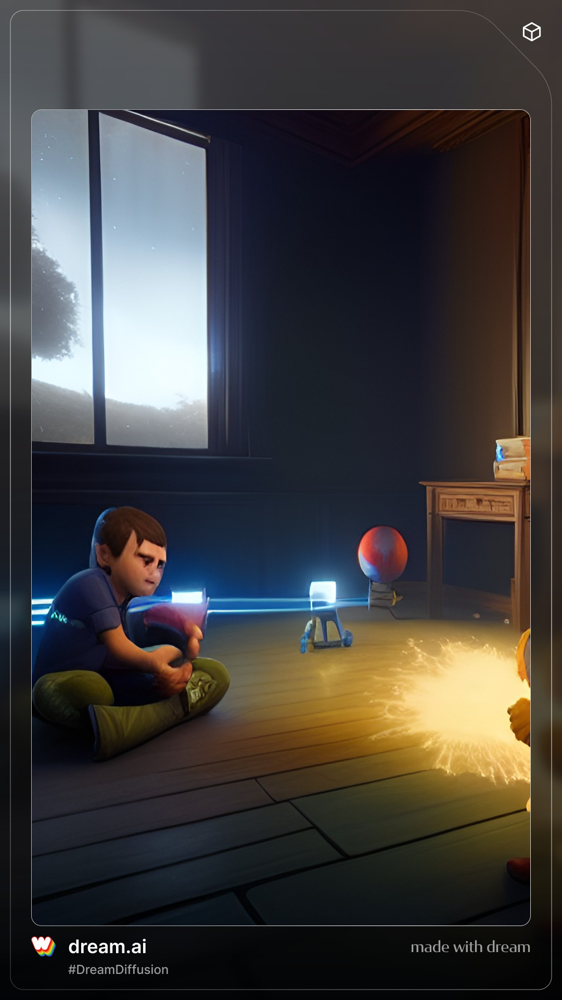
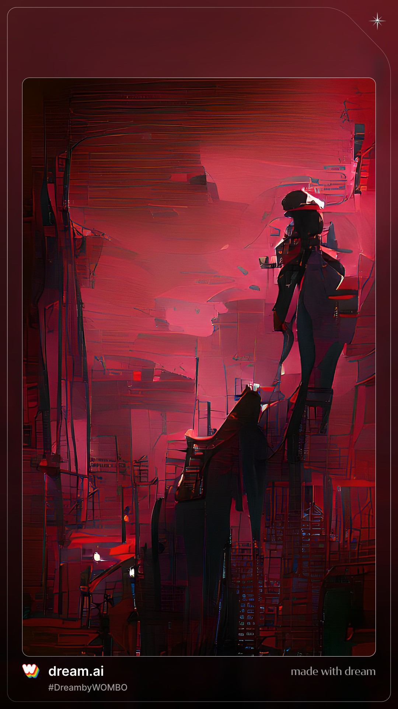
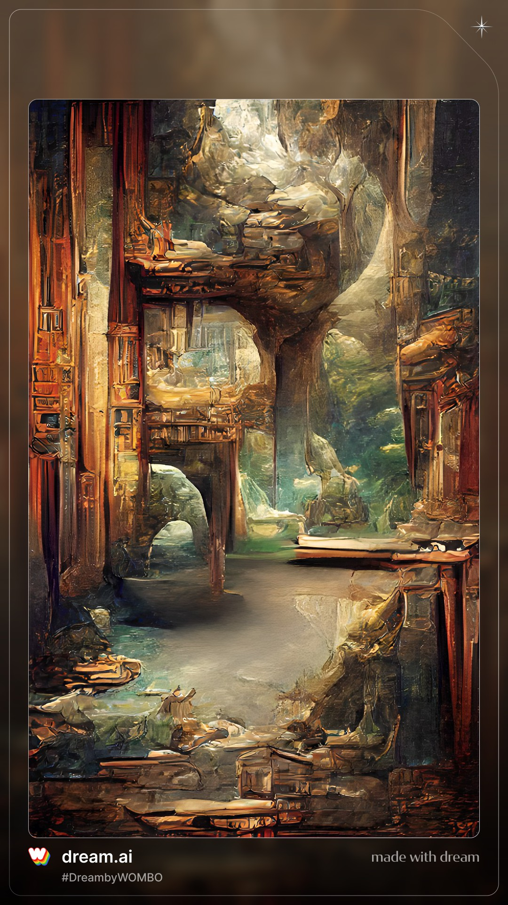
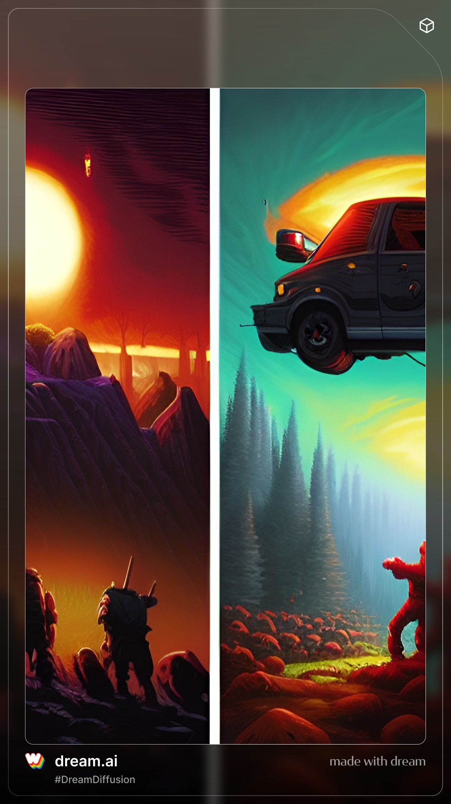
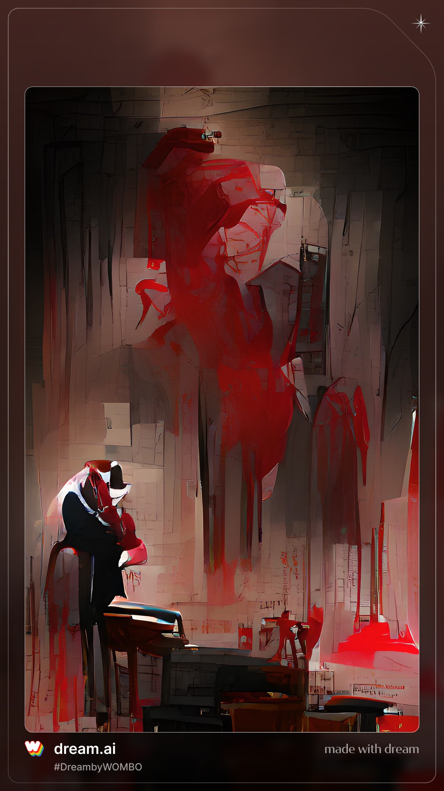

OUR AGENDA
The Plan for Today
- Introductions
- Background
- The Main Course
- Questions/Follow-ups

THE MODERATOR

Ryan Straight, Ph.D
Honors/Associate Professor of Practice @ UArizona
Director, MA{VR}X Lab
THE PANEL
Jessica Barberry
- Ed3DAO Community Enchanter
- @barberification
Dagan Bernstein

- Ed3DAO Community Growth Lead
- @DaganBernstein
- Ed3 Newsletter at https://www.ed3weekly.xyz
Mike Peck, Ed.D
- Ed3DAO Founder
- @EdTechPeck
THE QUESTIONS
What is Web3, anyway?

What is Web3, anyway?
A Solution in Search of a Problem?

What is Web3, anyway?
A Solution in Search of a Problem?
Intersection of Web3 and Online Learning?

What is Web3, anyway?
A Solution in Search of a Problem?
Intersection of Web3 and Online Learning?
“Wallet” doesn’t sound very educational…

What is Web3, anyway?
A Solution in Search of a Problem?
Intersection of Web3 and Online Learning?
“Wallet” doesn’t sound very educational…
But NFTs are scams, aren’t they?

What is Web3, anyway?
A Solution in Search of a Problem?
Intersection of Web3 and Online Learning?
“Wallet” doesn’t sound very educational…
But NFTs are scams, aren’t they?
Looking forward to the future.
THE END
That’s a wrap!
Thank you for coming! Find out more at:
MA{VR}X Lab
https://mavrxlab.org
https://ryanstraight.com
Ed3DAO
https://ed3dao.com
@ed3dao
Citation
@online{straight,
author = {Ryan Straight and \textless br /\textgreater**Moderator**:
Ryan Straight, Ph.D\textless br /\textgreater**Panelists**: Jessica
Barberry, Dagan
Bernstein,\ \&\ Mike\ Peck,\ Ed.D},
title = {\textless Img Align=“left” Width=“45\%”
Src=“lab.png”\textgreater\textless img Align=“right” Width=“32\%”
Src=“dao.png”\textgreater{}},
url = {https://mavrxlab.org/news/2022-11-01-ac22-ed3/deck},
langid = {en}
}